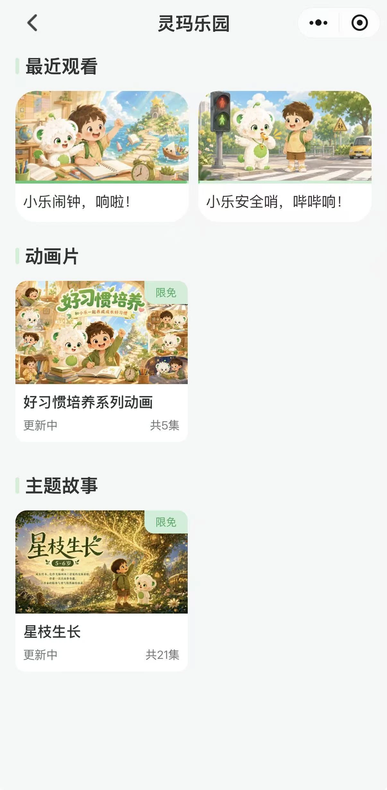
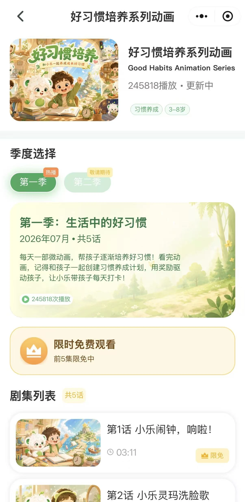

AI 期待与产品现实之间的差距
开发 AI 产品时，我们很容易把注意力放在提升底层技术的智能程度上。更强的模型，似乎是改善用户体验最直接的方式。但参与 AI 陪伴玩偶的工作让我意识到，产品质量并不只取决于 AI 本身有多聪明。
产品最初定位为面向儿童的 AI 陪伴伙伴，以对话互动为核心。但这种宽泛定位带来了实际产品难以满足的期待。营销信息有时呈现了超出产品可靠交付范围的能力。部分经销商收到产品后，发现实际体验与预期不符，产生了不满，也造成了部分经销商流失。
回头看，问题不只是 AI 需要变得更聪明，而是产品定位、承诺的体验与技术能力没有充分对齐。
这段经历揭示了一个重要区别：AI 产品不应围绕技术理论上可能做到什么来设计，而应围绕它在真实使用情境中能够持续交付的体验来设计。
重新思考互动方式
AI 陪伴玩偶看起来可能很简单：孩子对玩偶说话，玩偶作出回应。但要可靠交付这种体验，需要多个技术组件共同工作。
工作中，我了解到硬件发热、麦克风质量、Wi-Fi 连接、模型选择和响应速度等问题，都可能影响互动。玩偶没有回应时，原因未必在 AI 模型，也可能出在声音采集、网络连接或系统其他环节。
这让我意识到，对话智能并不能单独决定 AI 产品是否让人感到可靠。对话产品的可靠性，取决于支撑对话的整个系统。
我也观察到市场上 AI 陪伴产品的不同设计方式。
一种方式是围绕辨识度高的角色，例如奥特曼，开发玩偶。具体的身份、知识储备与对话边界，可以让互动更聚焦。用户不会期待它像通用对话助手一样，而是更清楚自己可以期待哪种互动。
另一种方式是限制语言互动的复杂度。以 Ropet 为例，其 CEO 坚持产品不应使用复杂句子与用户对话，为语言互动划定了清晰边界。与其简单将它描述为对话能力有限，不如更准确地理解为：复杂的句子式对话，本就不属于 CEO 希望产品提供的互动。结合触摸反馈和类似宠物的互动，这种方式弱化了对复杂对话的依赖，更着重于建立简单的陪伴感。
这些例子代表不同的产品策略，而非普遍适用的公式。但它们说明了一种重要可能：当当前 AI 能力无法满足所有期待时，设计者可以重新考虑互动方式本身。产品不一定需要模拟人类对话，也可以通过更窄的对话角色、简单的响应式互动，或实体与数字体验的结合创造价值。
在这个意义上，界定 AI 产品不应做什么，与决定它应该做什么，同样重要。
从通用 AI 伙伴转向具体教育用途
当团队重新思考自家玩偶“小乐”的定位时，这种思路有了更具体的例子。
团队不再继续将其宽泛定位为 AI 陪伴伙伴，而是转向更具体的用途：面向三至六岁儿童的习惯养成助手。
这一变化体现了对产品实际对话能力与更明确年龄段需求的进一步对齐。在当时，其对话能力更适合年幼儿童，而非复杂、开放式的交流。习惯养成也为产品提供了更具体的教育使用背景。
团队推出了习惯养成产品包，将家长端小程序与孩子和玩偶的互动连接起来。




家长可以进入小程序的成长目标板块。孩子先观看团队制作的短动画，内容涵盖习惯与日常安全，例如刷牙，以及过马路前观察交通信号灯。动画结束后，系统生成对应的成长目标，供家长查看确认。
家长随后可以配置提醒的时间与频率。到了设定时间，玩偶就会提醒孩子完成目标习惯。
体验还包含 NFC 卡片。每张卡对应一个动画主题，包含约十个引导问题。例如，刷牙主题卡可能会问为什么刷牙重要。孩子将卡片碰触玩偶身体上的 NFC 区域时，玩偶会随机选择一个问题与孩子互动，避免每次重复完全相同的问题。
不同组成部分承担不同作用。动画用有趣的形式介绍习惯，家长端小程序让成人设定和管理目标，NFC 卡片则让孩子可以自主发起互动，即使家长不在身边。
因此，产品连接了三个角色：家长选择并管理成长目标，孩子观看内容、发起活动，玩偶则围绕特定习惯提供提醒和引导互动。
产品不再完全依赖开放式 AI 对话，而是采用更有结构的互动方式。教育用途更清晰，活动也与具体的日常行为连接起来。
这次重新定位，是一次从宽泛的 AI 陪伴承诺走向更明确教育场景的尝试。它也改变了体验的组织方式：团队不再期待玩偶充当不受限制的对话伙伴，而是围绕习惯养成设计更有结构的体验。
但更清晰的定位并不自动保证商业成功。根据我当时的印象，产品销量并不突出。由于我已离开公司，无法观察其长期表现，也无法判断结果背后的原因。此前经销商的不满、产品体验，以及其他市场或渠道因素，都可能产生影响，但我无法建立直接因果关系。
关键在于，重新定位产品只是起点。调整后的体验，仍需通过实际使用和市场反馈来验证。
围绕体验设计，而不只是围绕技术
这些经历改变了我对 AI 产品设计的看法。
首先，产品定位应反映技术能够可靠交付什么。宽泛的 AI 陪伴或智能承诺，可能造成难以满足的期待。更具体的场景，可以帮助用户理解产品用途，以及能够合理期待什么。
其次，互动方式应围绕目标用户与情境设计。复杂对话只是互动的一种形式。对于年幼儿童，有结构的提示、实体互动、提醒和简单回应，可能比不受限制的对话更合适。
第三，整个系统需要支持所承诺的体验。硬件、连接、互动设计和 AI 能力相互依赖。改善其中一个组件，并不一定能补偿另一个组件的不足。
归根结底，目标不应是让每个 AI 产品都尽可能聪明，而应是识别一种对目标用户有价值、又能用现有技术稳定交付的体验。
设计良好的 AI 产品，不一定拥有最先进的 AI，而是能够充分利用自身能力，交付清晰、可靠且有意义的体验。